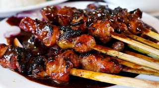

|
|
Cara Membuat Sate Ayam
- Tusuk 3 potong daging ayam dan 1 potong lemak per tusuk sate
- Tumis bumbu halus dengan minyak sayur hingga harum
- Tuangi air dan masak hingga kental.Lalu angkat
- Aduk bumbu yang sudah ditumis dengan minyak lemak ayam, minyak kacang dan kecap
- Bumbu dibagi dua. Satu bagian untuk bumbu pencelup sate sebelum dibakar dan satu bagian lagi dipanaskan kembali
- Bila sate akan disajikan tuangi bumbu dan sajikan bersama pelengkapnya.
Bahan
- 600 gram daging ayam, potong dadu 2 cm
- 150 gram lemak ayam, potong dadu 2 cm
- 4 sendok makan kecap manis
- 2 sendok makan minyak sayur
- 4 sendok makan minyak kacang
- 50 gram lemak ayam panaskan hingga berminyak
- 50 ml air
- 20-25 bahan tusuk sate yang telah direndam
Bumbu Halus
- 5 buah cabe merah yang telah direbus
- 10 buah cabe rawit
- 100 gram kacang tanah goreng
- 2 siung bawang putih
- 5 butir kemiri sangrai
- 1 sendok makan gula
- garam dapur secukupnya
|

Video on Youtube
|